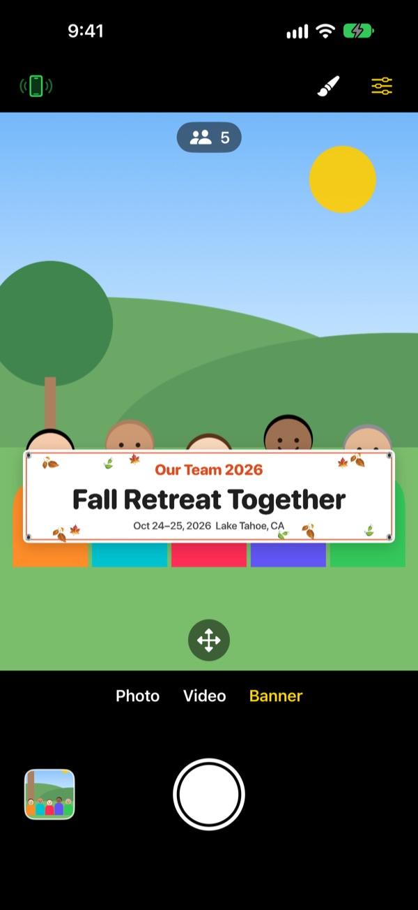
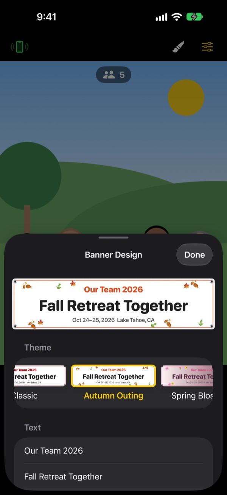

The banner group photo.
No banner to print.
Write your words, pick a theme, and a banner appears right in front of your group. A friend's iPhone becomes the remote with one QR scan, so whoever's taking the photo gets in it too.
Every feature is free. Requires iOS 17 or later.

Make a banner
Edit the words and tap a theme. Press the shutter and it counts down three seconds, just like the app.
Ordering a banner just for one photo?
You order it, haul it to the event, and afterwards nobody knows where to keep it. And with nobody left to take the picture, someone always ends up outside the frame. ShutterLink puts the banner in the camera view and turns a friend's iPhone into the remote, so everyone gets in the shot, banner and all.
A banner for your event in a minute
Start from 13 themes, including fall retreat, spring picnic, year-end party, birthday, sports day, graduation, wedding and team offsite, then write up to three lines of your own.
Change the background, font, decorations, colors and shape, and add your logo. Choose fabric, vinyl or paper. A fabric banner sags, wrinkles and ripples in the breeze like the real thing.

A remote with nothing to install
Tap the remote button at the top left and a QR code appears. A friend points their iPhone's Camera at it, and ShutterLink Remote opens right away as an App Clip and connects.
The live view on the remote shows the banner too, so you frame the shot and press the shutter. Each photo lands on the remote straight away, so a friend without the app can save and share it on the spot.
Three steps to start
- 1
Stand it up
Open ShutterLink and set the iPhone on a tripod or shelf.
- 2
Place the banner
Choose Banner at the bottom, tap the brush to set your words and theme, then tap the ground where your group will stand.
- 3
Raise your palm
Raise your palm or press the shutter on the remote. The timer counts down and takes the shot.
Built for group photos
- Palm gesture · clap shutter
- Raise an open palm toward the camera or clap loudly once to start the timer
- Smile shutter
- Shoots on its own when everyone is smiling with eyes open
- Timer 3 · 5 · 10 · 20 · 30 s
- A voice counts down, the flash blinks along, and the remote buzzes in your hand
- Ask everyone to look at the camera
- Tap it and the camera iPhone calls out to get everyone's attention
- Burst of 3 · 5
- Picks the best shot where everyone's eyes are open. Swap it for another in the gallery
- Head count · edges · level
- Counts the people in frame, warns when someone is at the edge, and shows a level when the phone tilts
- Interval 3 s to 1 min
- Captures a sunset or a project as it happens
- Camera controls
- Tap to focus and expose, exposure compensation, flash, grid, zoom from 0.5x up to 10x depending on your iPhone, front and back cameras, video
- Simple mode
- The remote shows one big shutter button anyone can press
- Volume buttons · Camera Control
- Fire the shutter on the camera iPhone itself, no remote needed
Flash, bursts, zoom and the front camera aren't available in Banner mode. The timer, palm shutter and remote all still work.
Every feature is free
Free
- Banner mode with 13 themes
- Remote with nothing to install (App Clip)
- Palm, clap and smile shutter, plus timer
- Best shot, head count and level
- Video and interval shooting
Leave a tip (optional)
- Send a small, medium or large tip from Settings
- Tips don't unlock or lock anything
Not a subscription. You pay once, only when you tip.
No ads and no account.
Questions
What do I need?
Install ShutterLink on the camera iPhone (iOS 17 or later). The remote iPhone needs nothing installed, just internet once the first time it opens the App Clip. Keep Bluetooth on for both, and keep them close, usually within 10 m.
The App Clip doesn't open when I scan the QR code.
Make sure the remote iPhone is online. You can also type the camera iPhone's 4-digit pairing code into ShutterLink Remote and tap Connect. Check that App Clips aren't blocked in Settings › Screen Time › Content & Privacy Restrictions.
It's stuck on "Looking for camera…".
ShutterLink has to be open on the camera iPhone's screen. Check Bluetooth is on in Settings › Bluetooth on both phones. The pairing code changes every time the app opens, so if you reopened it, use the new QR or code and tap Try again.
I see "Bluetooth permission denied".
Turn ShutterLink on in Settings › Privacy & Security › Bluetooth. The remote is an App Clip and may not be listed there. If so, scan the QR again and tap Allow when asked.
The live view is choppy or blurry.
The live view is deliberately scaled down to travel over Bluetooth. Photos and videos are saved at the camera iPhone's full quality. Walls, people or distance between the phones can make it stutter, but the shutter and other controls keep working.
Where do my photos go?
To Photos on the camera iPhone and the in-app gallery. The remote gets a copy too, but doesn't save it on its own, so save or share it before closing the remote. If nothing reaches Photos, allow ShutterLink in Settings › Privacy & Security › Photos.
My videos have no sound.
Turn ShutterLink on in Settings › Privacy & Security › Microphone.
Can I connect more than one remote?
Yes. Several iPhones can join with the same QR or code at once, and any of them fires the same camera.
The connection drops while shooting.
ShutterLink keeps the screen awake while it's open. Locking the phone or switching apps ends the connection, so keep the app on screen while you shoot.
Are my photos uploaded anywhere?
No. The two iPhones connect directly over Bluetooth, and photos and videos stay on the camera iPhone and the remote you connected. It works on a mountain or at the beach with no signal, and there's no account.
Still stuck, or found a bug? Write to leeo@kakao.com. Include both iPhone models and iOS versions so we can look into it quickly.